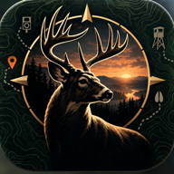

RutlinePrivacy policy
Effective October 9, 2026
Rutline is a hunting map, weather and tracking app. This page explains what it stores and where.
What stays on your device
Your pins, trails, photos, landowner notes, score sheets and settings are stored in the app's own storage on your phone or browser. If you never sign in, nothing you enter leaves the device except the requests described below. Photos you measure a rack from are processed on the device and never uploaded.
What an account stores
If you create an account, the same data (pins, trails, photos, landowner notes, settings, and the name you choose for camps) is copied to a private database and file store hosted by Supabase in the United States, so it can sync to your other devices. Each record is tied to your account and protected by row-level security: only you can read it, unless you share a pin or trail into a camp, in which case the members of that camp can read and edit it. Your email address is used to sign in and is shown, as its first part, to camp members who have not set a display name.
Third-party services the app contacts
Each of these receives only what it needs to answer a request, usually the area of the map you are looking at. None of them receives your account identifier.
- Open-Meteo receives the latitude and longitude of your home ground to return weather.
- Esri serves satellite imagery, and USGS serves topographic tiles and renders the terrain layer, for the area on screen.
- Open-Meteo geocoding and BigDataCloud turn a town name or coordinates into a place label.
- State and county GIS servers return public parcel records (boundaries, owner of record, mailing address, acreage) for the area on screen. Rutline uses statewide layers where a state publishes one and county services elsewhere; to find a county's service it may ask the FCC which county a point is in and search ArcGIS Online for that county's parcel layer. These are public records. Rutline does not store them except in the landowner notes you choose to save, and it does not look up phone numbers.
- USGS PAD-US and state wildlife agencies return public land boundaries, walk-in access areas and hunting unit boundaries.
- Supabase provides sign-in, database and photo storage when you use an account.
Rutline has no advertising, no analytics and no trackers.
Location and camera
Location is used, with your permission, to show you on the map, drop pins where you stand, and set your home ground. The camera is used for the blood light and to add photos to pins. Camera frames from the blood light are processed on the device and are not sent anywhere unless you tap "Mark blood here", which saves that frame as a photo on a pin.
Your choices
- Export everything from Settings → Your data → Backup at any time.
- Sign out and clear this device from Settings → Account.
- Delete everything in your account, or delete the account itself, from Settings → Account → Danger zone. Deletion is immediate and permanent.
Children
Rutline is not directed at children under 13 and does not knowingly collect their information.
Contact
Questions about this policy or your data: see the support page or open an issue at github.com/jgyoerger1/rutline/issues.